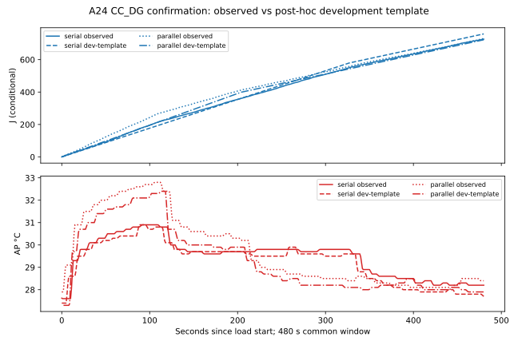

4세션 중 개발 2세션으로 적합한 고정 870건 모형의 확인 2세션 사후 진단입니다. 확인 요약을 이미 본 뒤 추가한 지표이므로 독립 사전등록 검증이 아닙니다. J는 A24 전류 raw=mA 가정의 기기 전체 소비이며 절대 정확도 미인증입니다. AP는 배터리/표면 온도가 아닙니다.
기존 통합 정책 탐색으로 돌아가기 · 오차 CSV · 시간축 CSV · 개발 상태 전력

| 조건 | 480초 J 오차 (예측−관측) | 누적 J 경로 MAE | AP 경로 MAE °C | AP 최대 절대오차 °C | 30°C 초과 오차/비교 가능 시간 |
|---|---|---|---|---|---|
| parallel | -8.468 | 19.366 | 0.425 | 1.800 | -75 / 479 s |
| serial | +32.306 | 16.866 | 0.245 | 1.000 | -2 / 480 s |
30°C는 그림을 읽기 위한 탐색 축이며 안전 한도가 아닙니다. 병행 AP 1초는 예측 phase 경계의 미계측 gap 때문에 제외됐습니다. 전체 480초 초과시간으로 읽지 마십시오.
개발 상태 평균 W: resident idle, 분류 CPU, 탐지 GPU, 분류 CPU+탐지 GPU만 식별했습니다. 확인 세션의 실제 점유 구간에 대입한 J는 일정 조건부 사후 재생이며, 임의 도착의 처리시간·전력·AP 예측이 아닙니다. 분류 GPU, 탐지 CPU, 역방향 병행, 동일 과업 병행과 상태별 AP 응답은 미지원입니다. 기존 합성 정책 화면의 에너지/AP는 탐색 가정입니다.
BAT·SKIN·NPU·다른 기기·열 throttling·배터리 잔량/사용시간 예측은 미지원. 센서 표본은 독립 세션 반복이 아닙니다.